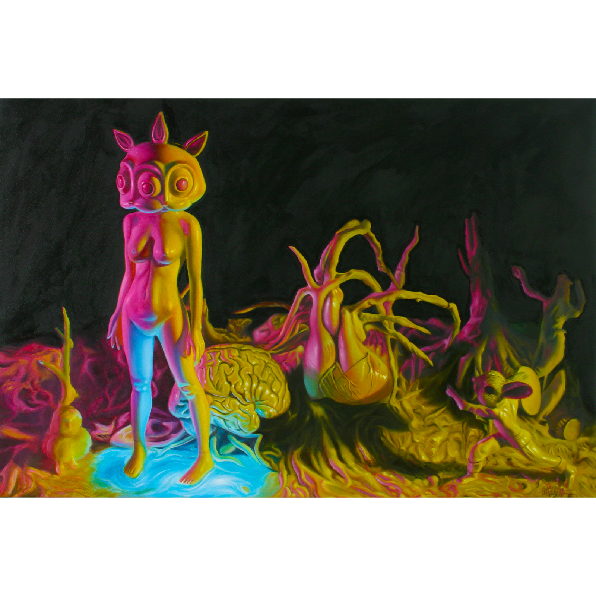
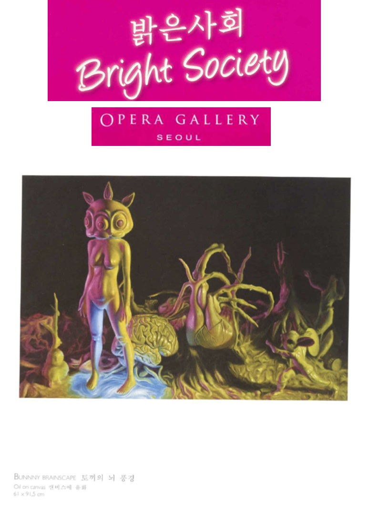
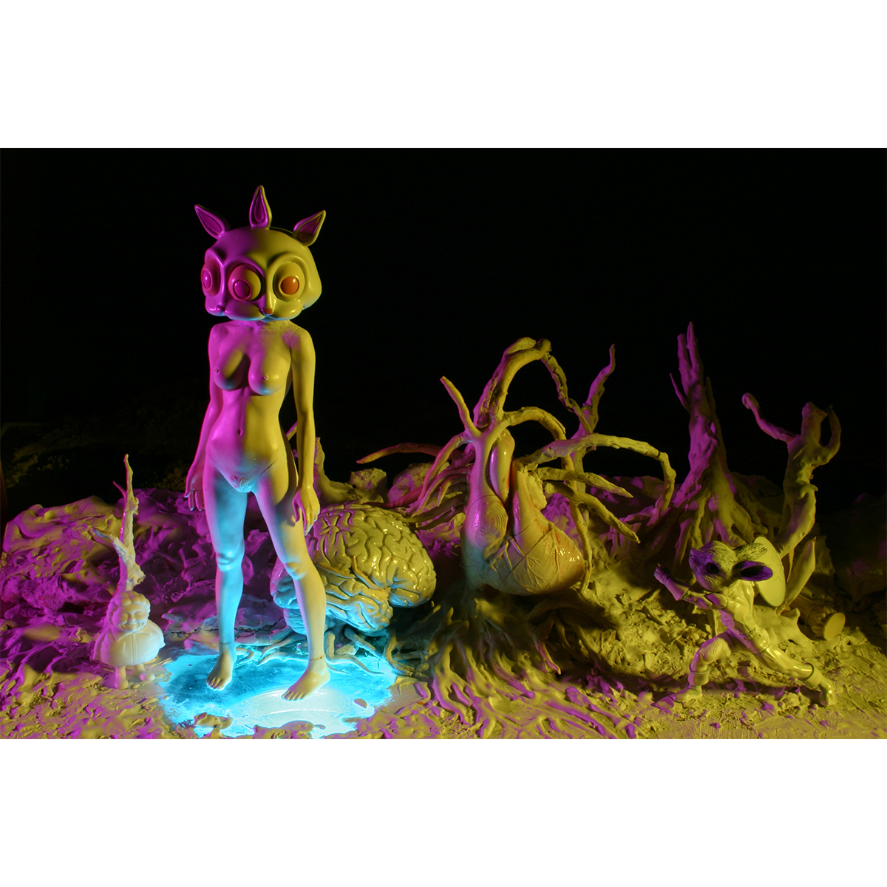

Exhibitions
Next Gen: Art for the New Aeon, Copro/Nason Gallery, Bergamot Station T5, Santa Monica, California, US, July 14–August 4, 2007. Curated by Gary Pressman.
Bright Society, Opera Gallery, Seoul, South Korea, October 12–31, 2009.
Literature
Ron English, Abject Expressionism: The Art of Ron English (San Francisco: Last Gasp, 2007), p. 44. ISBN 978-0867196894.
Notes
Also known as Small Bunnie Barren Landscape.
This work appears on Copro/Nason’s exhibition page for Next Gen: Art for the New Aeon, available here, accessed April 21, 2026.
It is also documented in the exhibition catalogue for Bright Society, which serves as evidence of its inclusion in that exhibition.
On Copro/Nason’s exhibition page, the work is listed as acrylic on canvas; this conflicts with the current oil-on-canvas record and is noted here as a source discrepancy.
Ancillary Documentation

